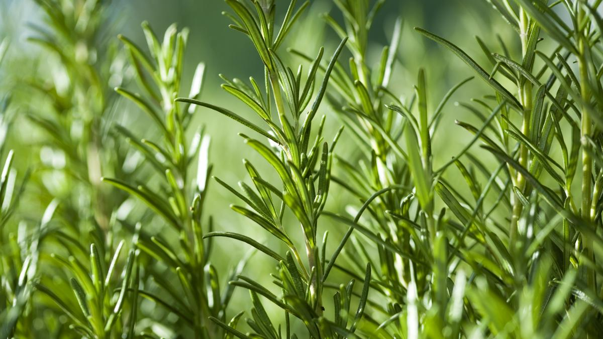

ROMERO

El romero es una especie vegetal común en la península Ibérica y, en general, en toda la cuenca mediterránea. Se utiliza desde la Antigüedad en la medicina tradicional, gracias a las múltiples propiedades que se le han atribuido históricamente. De todas, son sus aplicaciones externas las más populares. Sin embargo, el interés que despierta esta planta aromática en la actualidad radica en el potente efecto antioxidante de algunos de sus componentes.